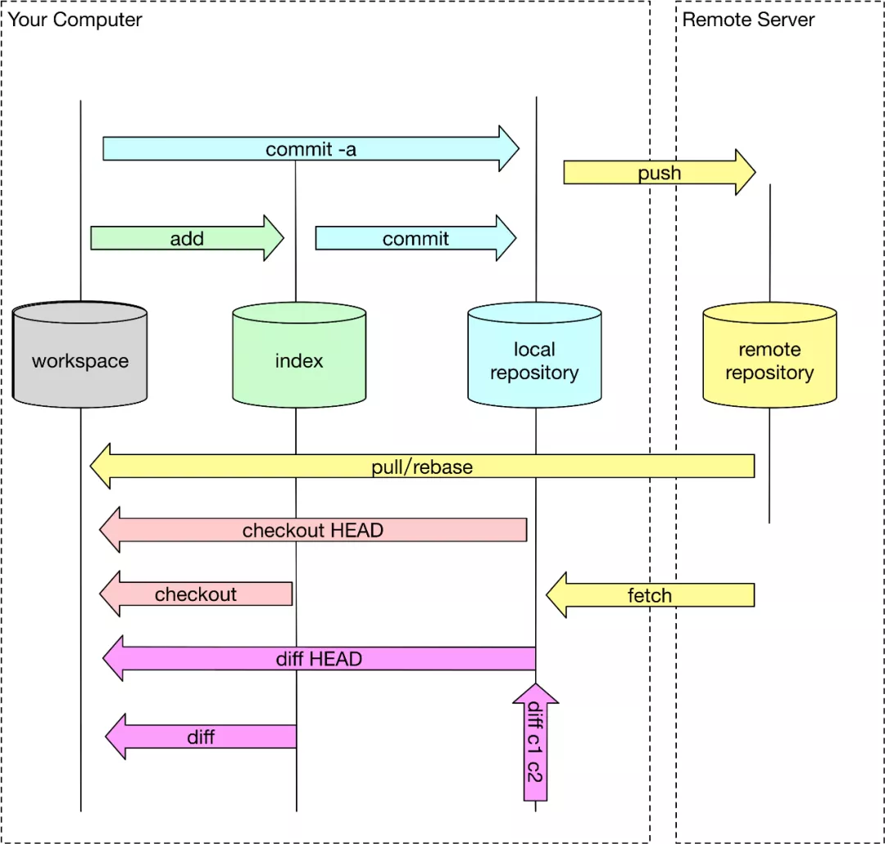
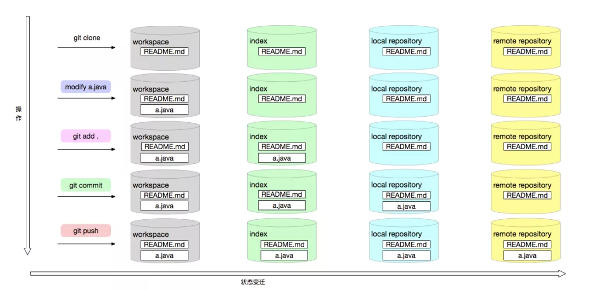

Git使用的基本技巧
1 什么是 Git
Git 是用于Linux内核开发的版本控制工具。与 CVS、 Subversion 一类的集中式版本控制工具不同，它采用了分布式版本库的作法，不需要服务器端软件，就可以运作版本控制，使得源代码的发布和交流极其方便。 Git 的速度很快，这对于诸如 Linux 内核这样的大项目来说自然很重要。 Git 最为出色的是它的合并追踪（merge tracing）能力。
2 Git 的安装
2.1 安装 Git
从官网上下载 Git 安装即可。在任一文件夹中右键出现Git Bash Here，点击该选项能打开命令窗口，即表示安装成功。
首先需要设置全局参数：名字和邮箱地址。
$ git config --global user.name "Your Name"
$ git config --global user.email "email@example.com"输入git config –global –list命令可以显示设置过的全局变量，如下：
$ git config --global --list
core.editor="D:\Microsoft VS Code\Code.exe" --wait
user.name=tzhiy
user.email=2570986081@qq.com2.2 创建版本库
版本库又名仓库，英文名 repository ，你可以简单理解成一个目录，这个目录里面的所有文件都可以被 Git 管理起来，每个文件的修改、删除，Git 都能跟踪，以便任何时刻都可以追踪历史，或者在将来某个时刻可以“还原”。
所以，创建一个版本库非常简单，首先，选择一个合适的地方，创建一个空目录。
第二步，通过git init命令把这个目录变成 Git 可以管理的仓库。
$ cd /e/githubup
$ mkdir demo
$ cd /e/githubup/demo
$ pwd
/e/githubup/demo
$ git init
Initialized empty Git repository in E:/GitHubUp/demo/.git/可以发现，在文件夹内新增了一个以 .git 命名的隐藏文件。到这里，一个真正的仓库就创建好了!
3 Git 的目录结构
在使用 Git 之前，我们要了解 Git 的主要结构是什么。
git中加入了暂存区的概念，分为工作区，版本库中的暂存区，分支等概念。git版本库的模型如下图所示：

上图描述了 git 对象的在不同的生命周期中不同的存储位置，通过不同的 git 命令改变 git 对象的存储生命周期。
工作区(workspace)
就是我们当前工作空间，也就是我们当前能在本地文件夹下面看到的文件结构。初始化工作空间或者工作空间 clean 的时候，文件内容和 index 暂存区是一致的，随着修改，工作区文件在没有 add 到暂存区时候，工作区将和暂存区是不一致的。
暂存区 (index)
老版本概念也叫 Cache 区，就是文件暂时存放的地方，所有暂时存放在暂存区中的文件将随着一个 commit 一起提交到 local repository 此时 local repository 里面文件将完全被暂存区所取代。暂存区是 git 架构设计中非常重要和难理解的一部分。
本地仓库 (local repository)
git 是分布式版本控制系统，和其他版本控制系统不同的是他可以完全去中心化工作，你可以不用和中央服务器 (remote server) 进行通信，在本地即可进行全部离线操作，包括 log，history，commit，diff 等等。完成离线操作最核心是因为 git 有一个几乎和远程一样的本地仓库，所有本地离线操作都可以在本地完成，等需要的时候再和远程服务进行交互。
远程仓库 (remote repository)
中心化仓库，所有人共享，本地仓库会需要和远程仓库进行交互，也就能将其他所有人内容更新到本地仓库把自己内容上传分享给其他人。结构大体和本地仓库一样。
使用 Git 命令后文件的变化

Git管理的是修改，当使用git add命令后，在工作区的第一次修改被放入暂存区，准备提交，但是，在工作区的第二次修改并没有放入暂存区，所以，git commit只负责把暂存区的修改提交了，也就是第一次的修改被提交了，第二次的修改不会被提交。
所以在每次使用git commit之前，所有修改过的文件都必须重新进行git add，将工作区(workspace)中的修改提交到暂存区(index)中，否则即使进行了git commit本地仓库中也将不会出现修改。
4 版本管理
4.1 添加文件到版本库
4.1.1 在刚创建的 Git 仓库下创建一个 readme.txt 文件:
this is readme.txt
hello git4.1.2 使用 git add 命令将文件提交到暂存区。
$ git add readme.txt可以使用 git add .来一次性提交所有的改动。
4.1.3 使用 git commit 命令将文件提交到本地仓库。
$ git commit -m "new readme file"
[master (root-commit) ea52515] new readme file
1 file changed, 2 insertions(+)
create mode 100644 readme.txt-m 后面输入的是本次提交的说明。
4.2 状态管理
4.2.1 修改 readme.txt 文件为如下
this is a file named readme.txt
hello git4.2.2 使用 git status 查看当前状态
$ git status
On branch master
Changes not staged for commit:
(use "git add <file>..." to update what will be committed)
(use "git restore <file>..." to discard changes in working directory)
modified: readme.txt
no changes added to commit (use "git add" and/or "git commit -a")git status 命令可以让我们时刻掌握仓库当前的状态，上面的命令输出告诉我们，readme.txt 被修改过了，但还没有准备提交的修改。
4.2.3 使用 git diff 查看修改的内容
$ git diff
diff --git a/readme.txt b/readme.txt
index 4ead6b0..2d611cb 100644
--- a/readme.txt
+++ b/readme.txt
@@ -1,2 +1,2 @@
-this is readme.txt
+this is a file named readme.txt
hello git
\ No newline at end of file可以看到文件的被修改的状况。
4.2.4 使用 git status 查看 add 之后的状态
首先提交修改到暂存区。
$ git add .使用 git status 查看当前状态。
$ git status
On branch master
Changes to be committed:
(use "git restore --staged <file>..." to unstage)
modified: readme.txtGit 告诉我们将要被提交的修改包括 readme.txt。
提交到本地仓库。
$ git commit -m "readme.txt version2"
[master 6daed76] readme.txt version2
1 file changed, 1 insertion(+), 1 deletion(-)再次使用 git status 查看当前状态。
$ git status
On branch master
nothing to commit, working tree cleanGit 告诉我们当前没有需要提交的修改，工作目录是干净（working tree clean）的。
4.3 版本回退
在 Git 中，每当你觉得文件修改到一定程度的时候，就可以“保存一个快照”，这个快照在 Git 中被称为 commit。一旦你把文件改乱了，或者误删了文件，还可以从最近的一个 commit 恢复，然后继续工作，而不是把几个月的工作成果全部丢失。下面对这个功能进行演示。
4.3.1 再次修改 readme.txt，并提交到本地仓库
修改后的 readme.txt：
this is a file named readme.txt
hello world提交到本地仓库：
$ git add .
$ git commit -m "readme.txt version3"
[master 4a6cf89] readme.txt version3
1 file changed, 1 insertion(+), 1 deletion(-)4.3.2 使用 git log 命令查看版本库状态
$ git log
commit 4a6cf892a3b737a8e95934acac251bb60d118068 (HEAD -> master)
Author: tzhiy <2570986081@qq.com>
Date: Sun Jul 18 15:37:04 2021 +0800
readme.txt version3
commit 6daed765e7b45a03c96fcb658f5e61b6a170b438
Author: tzhiy <2570986081@qq.com>
Date: Sun Jul 18 15:19:22 2021 +0800
readme.txt version2
commit ea5251506b165792227d36ad8f874e403760d5ba
Author: tzhiy <2570986081@qq.com>
Date: Sun Jul 18 15:04:44 2021 +0800
new readme filegit log 命令显示从最近到最远的提交日志。commit id 就是版本号。HEAD 表示当前的版本，上一个版本用 HEAD^ 表示，上上一个用 HEAD^^ 表示，上 100 个版本用 HEAD~100 表示。
4.3.3 使用 git reset 命令回退到以前的版本
$ git reset --hard HEAD^
HEAD is now at 6daed76 readme.txt version2可以看到readme.txt 的内容回退到version2：
this is a file named readme.txt
hello git再次使用 git log 查看版本库状态：
$ git log
commit 6daed765e7b45a03c96fcb658f5e61b6a170b438 (HEAD -> master)
Author: tzhiy <2570986081@qq.com>
Date: Sun Jul 18 15:19:22 2021 +0800
readme.txt version2
commit ea5251506b165792227d36ad8f874e403760d5ba
Author: tzhiy <2570986081@qq.com>
Date: Sun Jul 18 15:04:44 2021 +0800
new readme file可以看到 version3 版本不见了，那怎么通过刚刚的方法回到 version3 版本呢？我们还可以用 commit id 跳转到其它的版本，可以通过之前的版本库状态查到 version3 的 commit id 是 4a6cf89…：
$ git reset --hard 4a6cf
HEAD is now at 4a6cf89 readme.txt version3又回到 version3 了！
Git 的版本回退速度非常快，因为 Git 在内部有个指向当前版本的 HEAD 指针，当你回退版本的时候， Git 仅仅是把 HEAD 从指向 version3。
4.3.4 使用 git reflog 命令查看每一次改动
你回退到了某个版本，关掉了电脑之后想恢复到新版本怎么办？找不到新版本的commit id怎么办？Git提供了一个命令 git reflog 用来记录你的每一次命令：
$ git reflog
4a6cf89 (HEAD -> master) HEAD@{0}: reset: moving to 4a6cf
6daed76 HEAD@{1}: reset: moving to HEAD^
4a6cf89 (HEAD -> master) HEAD@{2}: commit: readme.txt version3
6daed76 HEAD@{3}: commit: readme.txt version2
ea52515 HEAD@{4}: commit (initial): new readme file现在我们就可以知道每次执行命令所对应的 commit id 了。
4.4 撤销修改
4.4.1 丢弃工作区的修改
场景 1：当你改乱了工作区某个文件的内容，想直接丢弃工作区的修改时，用命令 git checkout -- file。
命令 git checkout -- readme.txt 意思就是，把 readme.txt 文件在工作区的修改全部撤销，这里有两种情况：
readme.txt 自修改后还没有被放到暂存区，现在，撤销修改就回到和版本库一模一样的状态；
readme.txt 已经添加到暂存区后，又作了修改，现在，撤销修改就回到添加到暂存区后的状态。
总之，就是让这个文件回到最近一次 git commit 或 git add 时的状态。
例如，将 readme.txt 的内容作修改:
this is a file named readme.txt
hello world
balabala$ git checkout -- readme.txt撤销后的 readme.txt:
this is a file named readme.txt
hello world4.4.2 丢弃暂存区的修改
场景 2：当你不但改乱了工作区某个文件的内容，还添加到了暂存区时，想丢弃修改，分两步，第一步用命令 git reset HEAD <file>，就回到了场景1，第二步按场景 1 操作。
用命令 git reset HEAD <file> 可以把暂存区的修改撤销掉（unstage），重新放回工作区。
$ git reset HEAD readme.txt
Unstaged changes after reset:
M readme.txtgit reset 命令既可以回退版本，也可以把暂存区的修改回退到工作区。当我们用 HEAD 时，表示最新的版本。
4.4.3 丢弃本地仓库的修改
场景 3：已经提交了不合适的修改到版本库时，想要撤销本次提交，参考版本回退一节，不过前提是没有推送到远程库。
5 远程仓库
6 分支管理
参考：
- Git - 维基百科
- 廖雪峰的官方网站